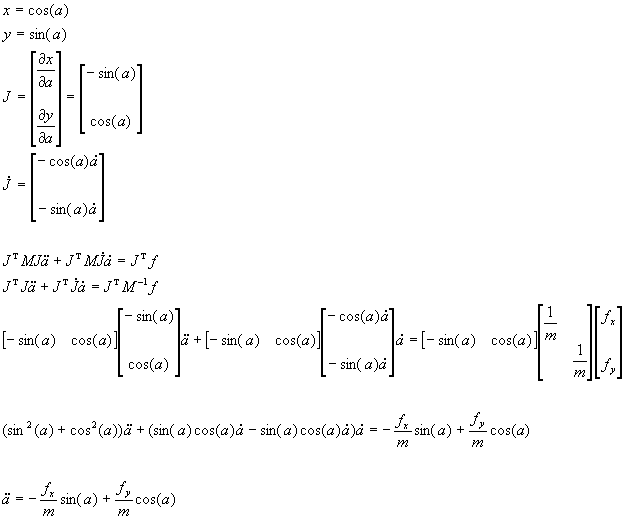
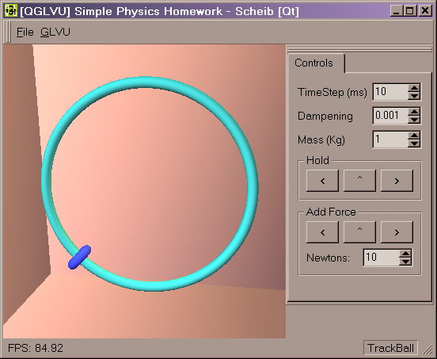

| Homework3: Constrained Dynamics
Summary:
Implement dynamics with a simple constraint.
Assignment text:
| (25pt) Problem A: A Bead on a Wire
Simulate the motion of a particle and visualize the result.
The particle is defined in a Cartesian coordinate system p=(x,y), and it
is constrained by a unit circle centered at the origin. Use the initial
position (0, 1), the initial velocity (0, 0), and gravitational force (0,-mg).
Constants are give as m=1Kg, and g=9.8m/sec2. |
What I did:
I have created a small program.
download the
program (you need to put qt-mt230nc.dll in
the same directory)
It requires Windows (2000?), openGL, GLVU
(to compile), and the QT runtime dll (included).
You can view the source
code. All the simulation code is contained in the main.cpp. The other
files are used for the user interface.
I chose to use the Lagrange’s equations
of motion, which is overkill for this circle case -- but still very easy.
The concept is to express the state of
the system in a natural manner, and then convert it to the "real world".
For a bead on a circle, the position can be stored as a single parameter
a
which indicates the angle.
Converting to world co-ordinates x,
y
is easy, just trigonometry. (See math below.) Then, the Jacobin matrix
J is solved. This matrix is built from the partial derivatives shown. Additionally,
the time derivative of J is found (J-dot).
The equation of motion is then shown. Notice
that I have moved the Mass matrix M over to the force f side
of the equation.
Then, some simple math and simplification
provides us with a solution for the acceleration of the angle variable
(a-dot-dot).

Finally, this system can be integrated
with Euler's method. The relevant code is shown below:
//simulation variables
static Stopwatch timer;
struct _circle
{
float theta;
float thetaVelocity;
Vec3f worldForces;
float mass;
} circle;
Vec3f gravity;
void initObjects(void)
{
timer.Start();
circle.theta = 3.1415/2;
gravity.Set(0, -9.8, 0);
}
void simulation(void)
{
static float time_simulated = 0;
float time_now = timer.GetTime();
float time_passed = time_now - time_simulated;
circle.mass = pControlPanel->FloatSpinBox_mass->doubleValue();
circle.worldForces.Set(0,0,0);
circle.worldForces += circle.mass * gravity;
float force_amount = pControlPanel->FloatSpinBox_force->doubleValue();
if (pControlPanel->PushButton_Force_Left->isDown()
)
circle.worldForces += Vec3f(-force_amount,0,0);
if (pControlPanel->PushButton_Force_Up->isDown()
)
circle.worldForces += Vec3f(0,force_amount,0);
if (pControlPanel->PushButton_Force_Right->isDown())
circle.worldForces += Vec3f(force_amount,0,0);
float timestep = pControlPanel->SpinBox_TimeStep->value()
/ (float)1000;
float dampening = 1-pControlPanel->FloatSpinBox_dampening->doubleValue();
int i=0;
while ((time_simulated < time_now) &&
(timestep > 0))
{
float acceleration =
- circle.worldForces.x/circle.mass*sin(circle.theta)
+ circle.worldForces.y/circle.mass*cos(circle.theta);
circle.theta += circle.thetaVelocity
* timestep;
circle.thetaVelocity += acceleration
* timestep;
circle.thetaVelocity *= dampening;
time_simulated += timestep;
i++;
}
}
Analysis:
The system performs very well, and is very
stable. The constraint can never be broken. Some dampening is required.

|